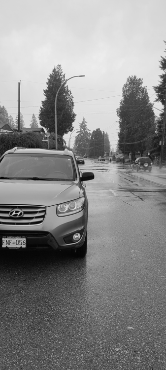
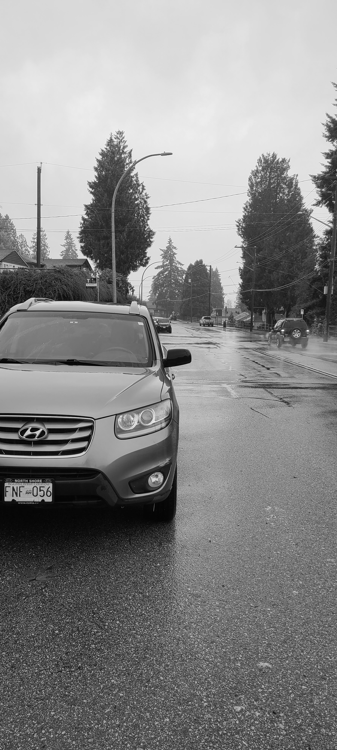

Name: Adam Bahrami
Student No: 301457246
Date: 10/20/2023
I have not cheated in any way when doing this assignment, I did it on my own. I may have asked questions about the assignment on Piazza, I know that’s totally fine and even encouraged. I also already know that this class is graded on a curve. I realize that if I cheat and by some miracle not get caught, any increase in my grade will in turn shift the curve and result in lower grades for my classmates. Any undeserved extra grade would come at the cost of all others. That’s horrible! I would never do it.
 


With a low FAST threshold of 0.0011, for s1 image 1, I wanted to display as many corners as I could, including weak points. I didn’t want to go any lower because it would pick up noise and false corners, and from s1 image 1, we can see there’s a lot of points captured for the road, which I wanted to avoid, but if I brought my FAST threshold any higher, it wouldn’t capture the corners on the car which was one of the more significant details of the image. Computing FASTR, I implemented a Harris threshold on the FAST points and with a threshold of 0.06 which was consistent with all the FASTR points of all my images, I managed to remove a lot of the fake corners and edge points coming from the road and the left side wall, and targeted the important parts such as the corners on the car and some aspect of the bushes to the left. If I brought 0.06 any lower, I would’ve received unnecessary corners I would need to filter out, and if I brought it any higher, the car corners would slowly disappear as I raise the threshold. As for my s2 image 1, I also used a low FAST threshold of 0.0011, as my picture had a really abstract background in the sense where there was noise and edges everywhere, so I wanted to get a feel of all the full image and capture all intensity changes and corners. For the FASTR points, I used the consistent harris threshold of 0.06, and didn’t mind to adjust the FAST threshold or the 0.06 Harris threshold, because with a stricter threshold like this, I was able to factor out the grass corners, the stone structure and plant abstractness (points everywhere on plants in the middle especially on non edges), and focus more on the finer edges of plants, and the powerline pole. However, some other factors I played with was the radius and this came into play where I qualified FASTR points if the distance and difference between my FAST points and my Harris points were less than or equal to the radius, they would be accounted for FASTR points. The logic is basically just using a local neighbourhood and if the Harris corner and FASTR corner fit within that neighbourhood, my Boolean matrix would place a TRUE value at the coordinates of the FAST point, and then later, those TRUE coordinates would be displayed as FASTR points.
Using FAST and FASTR points with an existing implementation of SURF, I was able to obtain certain similar features between the two images for the two of my image sets. For FAST matching of the first set images, there was an overall of 6 matches based on the color intensity, correctness of the match and distance. However, my image did have a neutral background and image intensity shifts were harder to detect, therefore, for example, the sky had a lot of feature matches from image 1 of the set to image 2. Fortunately, there was some aspect of the car from both images being compared and marked as similar feature, but there was also some parts of the car which were compared to the sky and a section of the power line, proving some faults of the SURF function. For FASTR matching of the first set images, there were 5 matching points detected with most of the points being matched on the sky. However, there was an accurate comparison of the edge of the car’s rear view mirror in both images of the set. The SURF function was more accurate here, but covered less points. For FAST matching of the second set images, the SURF feature was highly accurate. It matched the powerlines in both images together and covered a total of 5 points. The SURF function usage here was flawed in a sense where it couldn’t detect any other landscape features of the image, even though there was a lot of intensity changes and corners. For FASTR matching of the second set images, there were a lot of points captured. I still used the SURF function, but introduced new helper variables and test cases. There was a decent amount of inaccuracy, but more features were covered especially of the landscape. My logic was to extract the FAST features from both images in my image set and then match these features based on Matlab’s matchfeatures function and using it’s built in ‘NearestNeighborRatio’, as it accounts for the distance between the matching points and validates the points based on the needed criteria. I was then able to display the matched features through showMatchedFeatures. I applied this logic for FASTR features as well, I just matched based on the specific FASTR points. The SURF function definitely had some flaws, but with a better image, the feature detection method could have drawn out more accurate points.

For my FASTR points, i used the ransac parameters of a confidence level of 99, and max trial attempt of 500. Firstly, there's less FASTR points to match on between each image in a image set as those are the points validated by a computed harris threshold, limiting the features, leaving many more FAST features to match on between each image in a image set. With the abundance of FAST points, you can use more aggressive RANSAC parameters. As an example, a lower confidence level can be used such as 95% and a lower maximum number of trial attempts can be used such as 200 trials. This might suffice because you have more points to work with. The only con and trade-off is that there will be more outliers during the RANSAC process. FASTR points are more reliable due to their selection and filtering process, but there is a lot less matching features. Therefore, to estimate a robust homography, I've chosen a high confidence level of 99% and a larger maximum number of trial attempts 500 trials for RANSAC when working with my FASTR points. With a high enough number of trials and higher confidence level, this allows RANSAC to be more thorough in finding the correct homography despite having fewer feature points to work with.